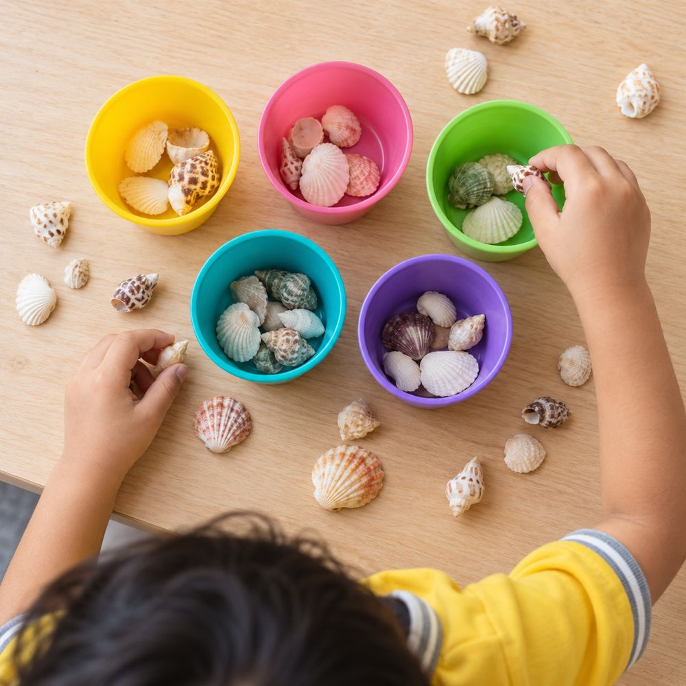
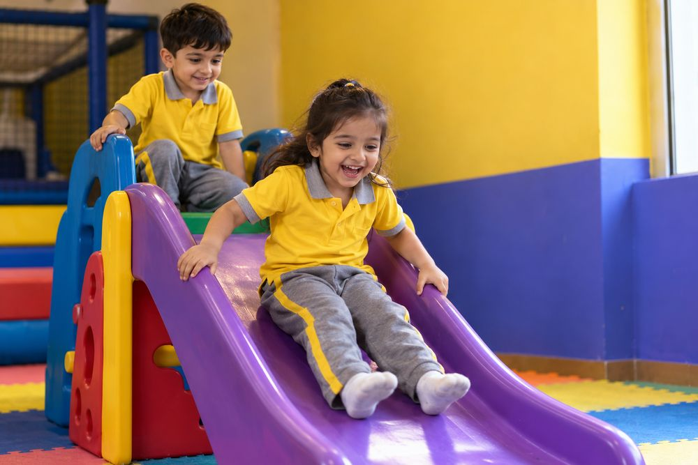
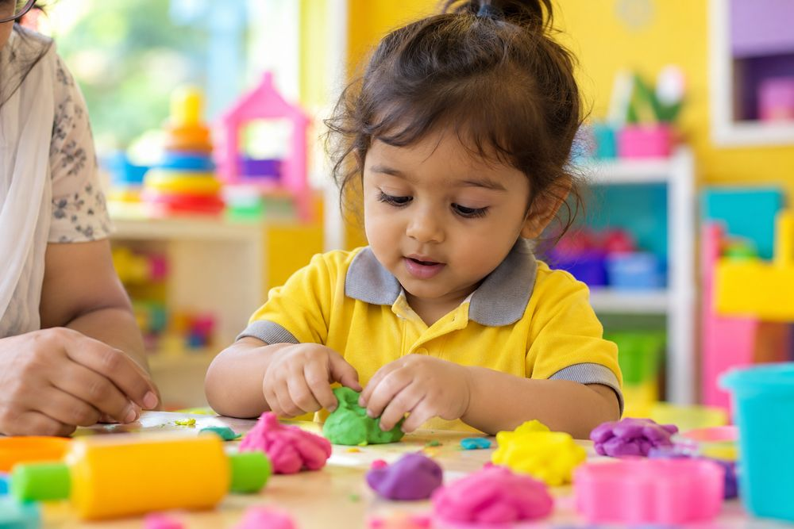
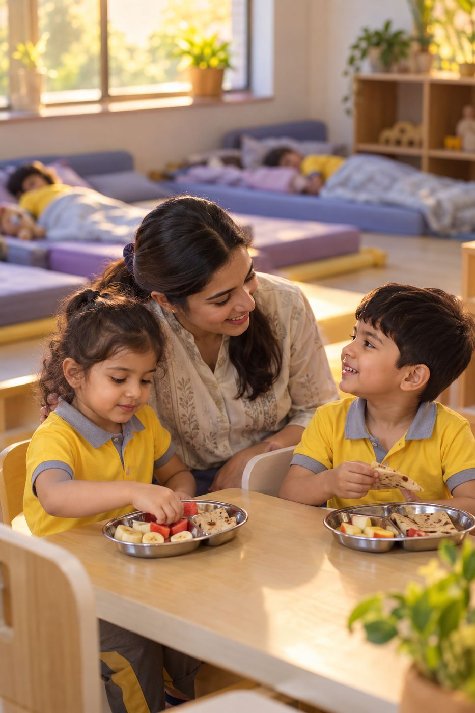
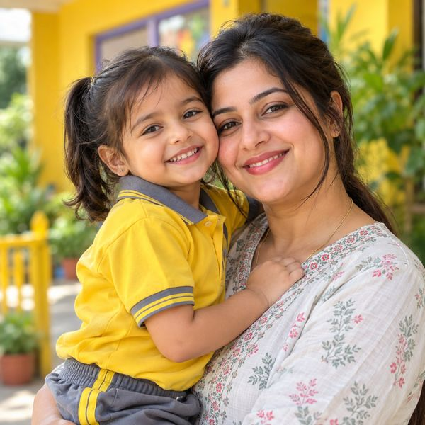

We teach the way children actually learn.
Through play, mess, questions and a great deal of repetition — because that’s genuinely how a young brain is built to work. Not because it’s easier. Because it’s right.
Most schools teach small children as though they were big children, only shorter.
Sit down. Face the front. Copy this. Say it back.
It’s how most of us were taught, so it feels like teaching. But a three-year-old’s mind isn’t built that way, and neither is a five-year-old’s. At this age understanding is constructed through the hands and the body first — by pouring, sorting, stacking, arguing, and asking the same question eleven times until the answer finally sticks.
So when you look through the window of a Kidzonia classroom and see a room full of children apparently just playing, here’s what’s worth knowing: that room is running to a plan. Every station in it was chosen. Every activity is doing a specific developmental job. And the teacher moving quietly between them is watching for about fifteen different things at once.
See how DISCOVER worksAsk your four-year-old what they did today. They’ll say “I played.”
They’re not wrong. Here’s the rest of it.

Sorting by size, colour and shape is how a child first meets classification and one-to-one correspondence — the ground floor of every piece of mathematics that follows.
Vocabulary, sequencing, cause and effect. And something far harder to teach: the empathy that arrives when you have to imagine somebody else’s problem.
Fine motor control and hand-eye coordination, certainly. But mostly the very particular confidence of having done a real thing without an adult stepping in.
Impulse control and social negotiation — the two skills that quietly decide how the next fourteen years of school are going to go.

Six great teachers.
One curriculum.
DISCOVER takes what works from all six and makes it practical. It isn’t a philosophy printed on a wall. It’s a decision about what happens at 9:40 on a Wednesday, and again at 11:15, and at the exact moment a child decides they’ve had enough for one morning.
Let a child set their own pace, and trust that a task being done slowly is a task being done properly.
There’s more than one way to be clever — the child who can’t yet sit still may understand rhythm, or space, or other people, better than anyone else in the room.
Gave us the kindergarten, along with the idea that children grow rather than get assembled.
The hundred languages a child thinks in long before they can write in a single one.
When a young mind is ready for what — and why pushing a concept too early costs you more than waiting would have.
How thinking gets built: remembering, then understanding, then using, then questioning.
Four rooms.
Four completely different humans.
What a two-year-old wants from a day and what a five-year-old wants from a day have almost nothing in common. So we stopped pretending otherwise and built four genuinely different programmes.

Settling in, saying goodbye at the door, and discovering that the world is full of things worth touching.
Explore Playgroup →Language arrives all at once, imagination takes over, and “why” becomes the most-used word of the day.
Explore Nursery →Numbers, letters and patterns turn up — through games and stories, not drills and worksheets.
Explore Kidzo Junior →Reading, writing, and the confidence to walk into an unfamiliar classroom without holding anyone’s hand.
Explore Kidzo Senior →
You’re at work. They’re absolutely fine.
There’s a specific kind of guilt that arrives at 4pm, in a meeting that’s overrunning, when you realise you’re not going to make pick-up. We built our daycare to take that away.
It’s the same building as the preschool, with the same people your child already knows, running to the same standards and the same safety rules. A longer day doesn’t mean a thinner one. There are naps, proper meals, quiet corners for a child who needs twenty minutes alone, and an adult who notices when your daughter isn’t eating the way she usually does.
- Open 8:00am to 8:00pm, so a long day at the office doesn’t become a problem at 6:30
- Infants welcome from 6 months, with care built around their routine rather than ours
- After-school care for older children, right up to 12
- Corporate daycare, if your employer would like to solve this properly for everyone
We’d rather over-explain this than simply reassure you.
Every preschool in the country will tell you your child is safe with them. Very few will tell you precisely what that means. So here’s ours, in full, without anybody having to ask.
Read our safety answers- Who we hire
- Every adult in the building is background-verified before their first day.
- Who’s watching
- ______
- How many of us
- ______ adults to children, so nobody is ever simply part of the crowd.
- When they’re unwell
- ______ on every shift, and a clear rule about when we call you rather than wait.
- Getting in and out
- Nobody collects your child without your authorisation. No exceptions, not once, not for anyone.
- What they eat
- ______
You’ll notice it at home before you notice it on any report card.
Development at this age doesn’t look like marks. It looks like this.
- She puts her own shoes on. Wrong feet, but entirely by herself.
- He tells you a story with a beginning, a middle and an end — and gets genuinely cross if you interrupt.
- She counts the steps up to the flat without anybody asking her to.
- He shares. Not every time. But he does it, and you can actually watch him decide to.
- She says “I’m feeling sad” instead of dissolving on the kitchen floor.
- He asks what a word means, then uses it — slightly wrongly — for a fortnight.
The review that matters most happens at pick-up time.
It’s the face they make when they spot you at the gate. Here’s what some parents told us in words instead.
Meet them at a visitFor the first two weeks Anaya cried at the gate every morning. Now she runs in without looking back, and comes home singing songs I’ve never heard. Her teacher noticed things about her I hadn’t.

Priya DeshmukhMother of Anaya, Playgroup · Kharghar
Some people read all of this and think: I’d like to run one.
If that’s you — we’re 45 centres in, and we know exactly what it takes to open the next one properly.
Explore franchise opportunitiesParenting notes, roughly monthly
Short, practical things we’ve learned from spending our days with small people. No sales pitch, and easy to unsubscribe.
Thank you. The next one is on its way to you.
Come and see it. Honestly, it’s the only way to know.
Book a visit at your nearest centre. Walk the rooms while a session is actually happening, not after everyone’s gone home. Meet the person who’d be spending the day with your child. And ask the difficult questions — how many adults per room, what happens when somebody gets hurt, what you do with a child who won’t settle.
Those are the ones we most like answering.
Book a visitOr call us on +91-8400 15 8500